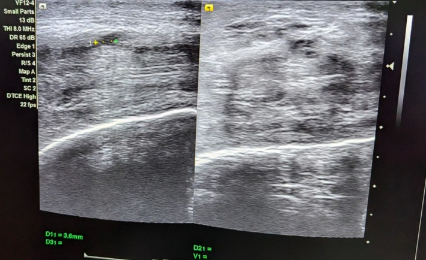

Ficha del catálogo
Fractura de pene
- Sistema
- Reproductor
- Modalidad
- US
- Región
- Pene
- Dificultad
- Avanzado
La fractura de pene es la rotura de la túnica albugínea de uno o de ambos cuerpos cavernosos durante la erección, generalmente por un traumatismo directo o por una flexión brusca. El paciente refiere un chasquido seguido de dolor, detumescencia inmediata y hematoma. Es una urgencia quirúrgica, ya que la reparación precoz reduce las secuelas de curvatura y de disfunción eréctil.
Técnica
El ultrasonido con transductor lineal de alta frecuencia es la primera exploración y permite localizar la solución de continuidad de la albugínea y el hematoma. La resonancia tiene mayor rendimiento cuando el hematoma es extenso y dificulta la valoración, porque muestra la albugínea como una línea de muy baja señal cuya interrupción resulta evidente. Ante sangrado uretral se estudia la uretra de forma dirigida.
Qué observar
- Interrupción focal de la línea ecogénica de la albugínea
- Hematoma en el trayecto de la rotura y su extensión al plano superficial
- Integridad del cuerpo esponjoso y de la uretra
- Presencia de sangre en el meato o en la luz uretral
- Afectación de uno o de ambos cuerpos cavernosos
- Localización precisa de la lesión respecto a la base y al eje del pene
Hallazgos
Se observa una discontinuidad de la línea hiperecogénica que representa la albugínea, con un hematoma adyacente que puede extenderse por los planos superficiales y deformar el contorno. En resonancia la albugínea, normalmente de muy baja señal, aparece interrumpida en el punto de la rotura, con hematoma de señal variable según su antigüedad. La afectación uretral se sospecha ante lesión del cuerpo esponjoso o sangre en el meato.
Perlas
Localizar con exactitud el punto de rotura tiene valor práctico directo, porque orienta la incisión quirúrgica. Un estudio negativo en un paciente con antecedente típico y detumescencia inmediata no descarta la lesión, de modo que la clínica muy sugerente justifica la exploración quirúrgica aunque la imagen no sea concluyente.
Diagnóstico diferencial
- Rotura de vena dorsal superficial
- Produce hematoma sin interrupción de la albugínea y suele tener un curso menos aparatoso.
- Hematoma sin fractura tras traumatismo
- La albugínea permanece continua en todo su trayecto y no hubo detumescencia inmediata.
- Induración plástica del pene
- Presenta placas fibrosas y calcificadas en la albugínea, con curvatura de instauración progresiva.
- Lesión uretral aislada
- Se manifiesta con sangrado uretral y se demuestra con uretrografía retrógrada, con cuerpos cavernosos íntegros.
Simuladores
- Sombra acústica por el hematoma que simula discontinuidad de la albugínea
- Placas fibrosas antiguas con interrupción aparente de la línea ecogénica
- Artefacto de anisotropía por incidencia oblicua del haz
Por modalidad
- US
- Es la primera exploración, localiza la rotura y el hematoma y está disponible de forma inmediata.
- RM
- Aporta mayor rendimiento cuando el hematoma es extenso y define con nitidez la interrupción de la albugínea.
Protocolo
Ultrasonido peneano con transductor lineal de alta frecuencia, explorando en planos longitudinal y transversal toda la longitud de ambos cuerpos cavernosos y del cuerpo esponjoso, con abundante gel y sin compresión. Se documenta la localización de la rotura respecto a la base del pene y a las horas del reloj. Ante sospecha de lesión uretral se realiza uretrografía retrógrada antes de sondar.
Clasificación
Errores frecuentes
- No describir la localización exacta de la rotura, dato que guía la incisión quirúrgica
- Descartar la fractura por un ultrasonido normal pese a una clínica típica
- Omitir la valoración de la uretra ante sangrado por el meato

fractura de pene túnica albugínea cuerpo cavernoso hematoma urgencia urológica uretra ecografía peneana